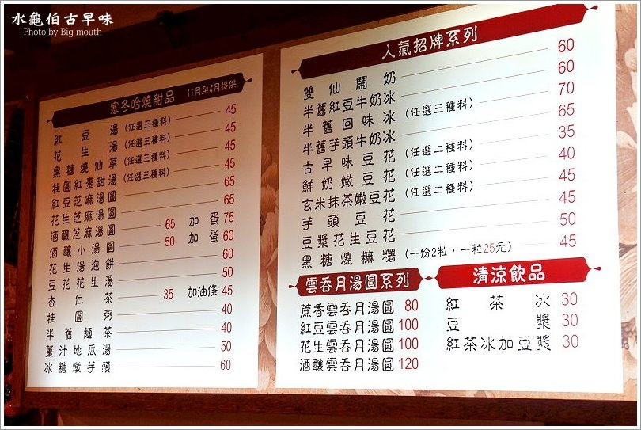
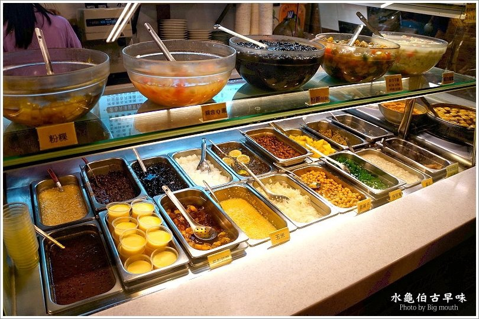

櫃台上方有許多冰品圖片，讓第一次來的民眾可以參考，也有許多配料可供選擇，每一樣看起來都好好吃唷，難怪櫃台前面總是排著滿滿的人潮。
店裡商品非常多樣化，除了人氣招牌系列外，還有冬天的暖呼呼甜品、雲吞月湯圓及清涼飲品，價位中等，但料好實在仍然受到許多饕客歡迎，選擇多多來很多次也不會膩。
配料有20餘種任你挑選，還有粉粿、玉米、芒果青等復古口味的配料，每一樣看起來都好好吃。

水龜伯古早味整體以農村風格搭配懷舊冰品，除了讓人回憶起童趣之外，冰品也都在水準之上，讓人回味無窮，應該是大口目前吃過的前三名好吃排行榜之中，尤其是香蕉味的清冰搭配店家熬煮的配料更是一絕，黑糖燒麻糬Q彈有咬勁，更是到水龜伯必點的一道甜品，如果吃不完的小鳥胃也可單點一顆，十分貼心；另外鮮奶嫩豆花也是招牌必點，不同於一般市面上的豆花，獨特的焦糖香加上奶香，讓人一吃就上癮，真是太無敵了，推薦給愛吃甜品的捧油去嚐鮮。
【店家資訊】
水龜伯古早味
地址：台北市北投區石牌路二段75巷8號
電話：02-28274788
營業時間：11:30–23:30